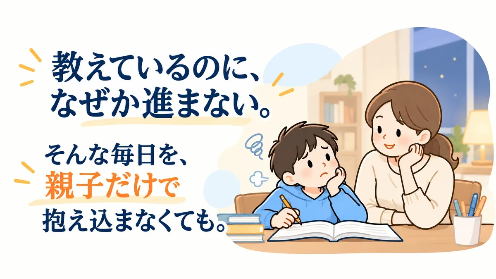
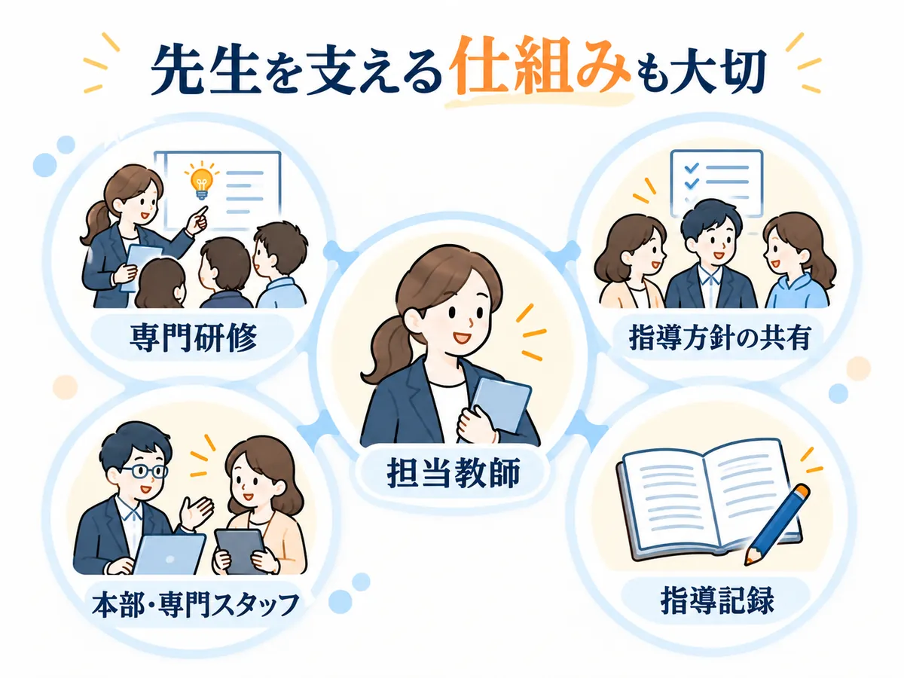
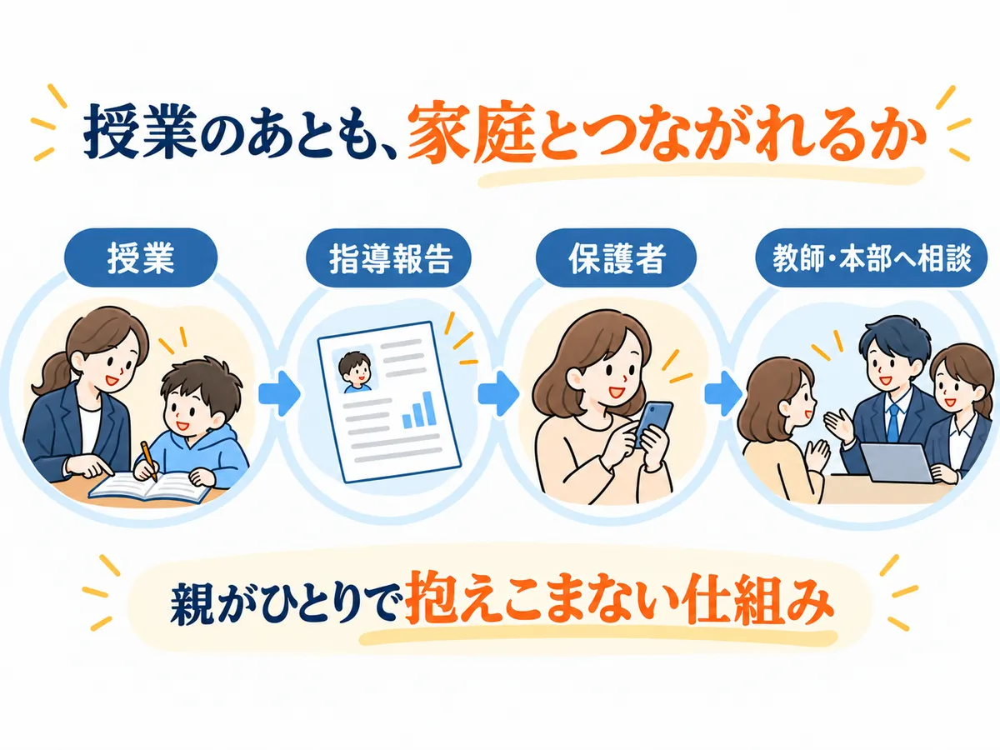
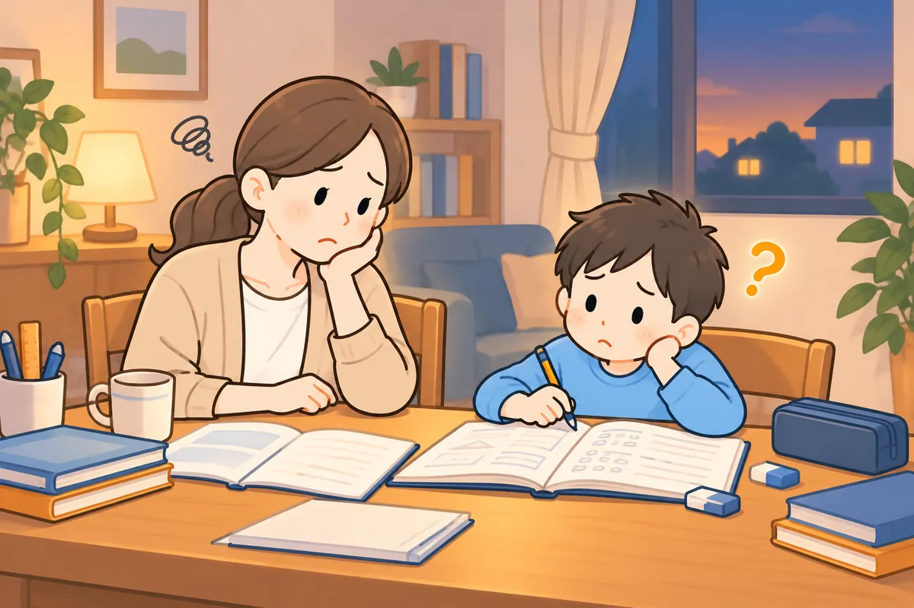
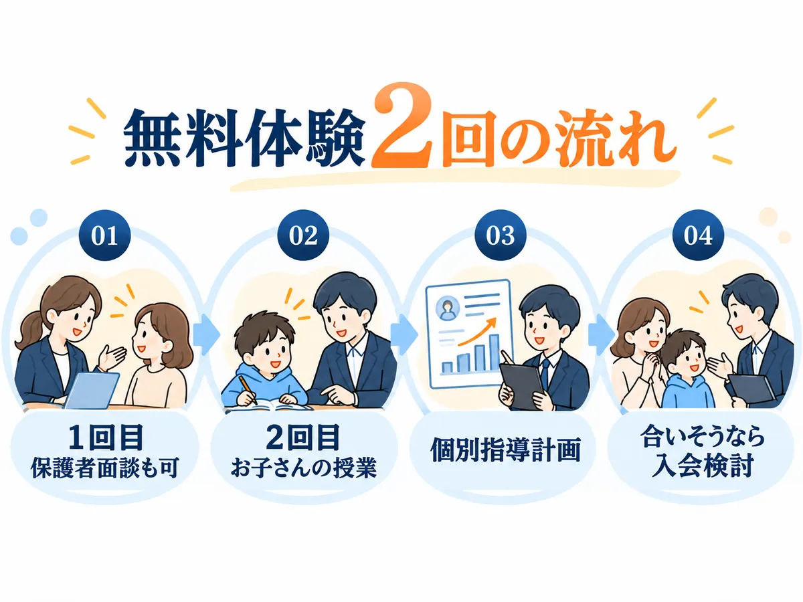

教えているのに、なぜか進まない。そんな毎日を、親子だけで抱え込まなくても。

「また、勉強のことで怒ってしまった。」
宿題が進まない。集中が続かない。
何度説明しても、同じところで止まってしまう。
それは「やる気」の問題ではなく、
今の学び方が合っていないだけかもしれません。
発達特性のあるお子さんの場合、
「1対1ならどこの家庭教師でも同じ」とは限りません。
診断のある・なしに関係なく、勉強でつまずきやすいお子さん向けの家庭教師を比べました。
発達特性に合う家庭教師4社を比較
表は横にスクロール可能
| サービス | 位置づけ | 先生の支援 | 学び方の設計 | 保護者サポート | 体験・検討 |
|---|---|---|---|---|---|
| 編集部おすすめ | 発達障害・グレーゾーン専門 | 専門機関の研修＋マニュアル研修 | アセスメント→個別指導計画 | 毎回の指導報告・教師/本部チャット・勉強会 | 無料体験2回＋1カ月返金保証（条件あり） |
| 発達障害サポートコース | 特性を共有し指導法をレクチャー | 体験をもとに指導カルテ | 保護者LINE・本部の定期確認 | 90分無料体験 | |
| 指導経験のある教師を選べる | 教育プランナーが教師選定 | 原因までさかのぼり個別設計 | 教育プランナー・定期面談 | 無料学習相談 | |
| LD・ADHD・ASDサポートコース | 発達支援経験のある教師を選抜 | ヒアリングして個別カリキュラム | 専任スタッフが相談対応 | 無料体験 |
※2026年10月5日時点の各社公式サイトをもとに編集部が整理しています。内容は変更される場合があります。
【結論】
4社とも、発達特性のあるお子さん向けのコースやサポートがあります。
その中で、先生の研修から一人ひとりの指導計画、授業後の報告や親の相談先まで、ひとつの流れで用意されているのが「ソウガク」。迷ったら、まずソウガクの無料体験で確かめるのがおすすめです。
▶ソウガクの無料体験を公式サイトで見る└無料体験は2回。1回目は保護者面談にもできます
このあと、選ぶときのポイントと、おすすめの3社を順に紹介します。
家庭教師選びで見る3つのポイント
1.「何が苦手か」より、「どこで止まっているか」を見てくれるか

同じ「勉強が苦手」でも、読むところで止まる子、書くことが大変な子、始めるまでに時間がかかる子では、必要な支援が違います。
だから「何が苦手か」だけでなく、どこで止まっているかまで見てくれるかが大事です。
2.「いい先生がいるか」だけでなく、先生を支える仕組みがあるか

相性のいい先生は大切です。でも、発達特性への理解が先生個人の経験頼みだと、少し心配です。
研修や指導方針の共有、先生が困ったときの相談先など、先生を支える仕組みがあるかも見ておきましょう。
3.授業が終わったあとも、親が相談できるか

授業が始まっても、「今週は宿題を嫌がっている」「家ではこんな様子だけど、授業ではどうなんだろう」といった家での悩みは残ります。
そうした様子を先生と共有できて、親だけで抱え込まずに済むか。ここも確かめておきたいポイントです。
「マンツーマンかどうか」より、この3つで比べたほうが、
わが子に合うかどうかが見えてきます。
発達特性へのサポートで選ぶ家庭教師3選
この3つのポイントで各社の公式情報を比べ、おすすめ順に紹介します。
※各社公式情報をもとに、編集部が独自に評価しています。
🥇第1位 ソウガク発達障害・グレーゾーン専門のオンライン家庭教師
おすすめポイント
- 発達障害・グレーゾーン専門
- 専門機関の研修を受けた認定講師
- アセスメントから個別指導計画
- 毎回の指導報告＋教師/本部チャット
- 無料体験2回＋1カ月返金保証
- 無料体験
- 2回
- 1回目は保護者面談も可
- 入会後継続率
- 96.7%
- 公式LP掲載
- 認定講師
- 100%
- 専門研修受講済み（公式LP掲載）
- 返金保証
- 1カ月
- 授業料全額（条件あり・入会金は対象外）
- 料金（月4回）
- 13,200円〜
- 小学生25分・税込（入会金は別途）
＼無料体験2回・1回目は保護者面談も可／
ソウガクの公式サイトを見てみる先生は、一般社団法人 発達凸凹アソシエーションによる教師研修と、座学のマニュアル研修を受けた社会人講師です（公式LPでは「専門機関監修」と紹介）。
保護者向けの勉強会や相談窓口もあり、入会後も同じ先生が担当します。

毎回の指導報告があるので、親がそのたびに「今日は何をやったの？」「どこまで分かった？」と確認し続けなくてもいい。
家で困ったことがあれば、教師や本部に共有できます。
家庭教師をつけたあとも、勉強のことを親ひとりで抱えなくて済みます。
2回の体験で決めきれなくても大丈夫。入会後も、条件を満たせば最初の1カ月分の授業料が返金の対象になります。
▶ソウガクの無料体験を見てみる└入会後も1カ月は返金保証あり（条件あり）
向いている人
- 塾が合わなかった
- つまずきから見てほしい
- 授業後も相談したい
体験で確認したいこと
- オンラインとの相性
- 学年に合った授業時間
- 先生との相性
画面越しの授業に抵抗がないか、集中しやすい授業時間はどれか、先生と話せそうか。
このあたりは、入会前の無料体験で確かめられます。
体験談｜「その子に合う学び方」を相談できたケース
公式サイト掲載の保護者の声（岡山県・中学2年生）
初めは緊張もあり、集中が続きにくい場面がありました。それまで、子どものタイプに合わせた学習方法を相談できる先生になかなか出会えなかったそうです。
複数回の体験を通じて、先生と一緒に小さな「できた」を重ね、特性に合った勉強のやり方を相談できたことが助けになったとのことです。
まずは今の様子を、無料体験で話してみてください。
※よくある迷いを編集部が会話形式にしたものです（人物はイメージ）。
＼1回目は保護者だけの面談もOK／
ソウガクの無料体験を詳しく見る🥈第2位 家庭教師のランナー勉強が苦手な子に強い家庭教師

おすすめポイント
- ADHD・ASD・LD向けサポートコース
- 特性に合わせて指導方針を組む
- 専門スタッフが担当教師を支援
- 本部へ電話・LINE等で相談できる
- 90分の無料体験あり
「勉強が苦手な子」を広く支援する家庭教師で、発達障害・グレーゾーン向けのサポートコースがあります。
体験時の情報から指導カルテを作って本部が教師を選び、合わなければ無料で何度でも交代できます。
向いている人
- 勉強の苦手意識が強い
- 先生との相性を重視したい
- 対面も検討したい
選ぶ前に確認したいこと
- 体験の先生が担当になるか
- 料金・教材の総額
- 発達サポートの内容
ソウガクとの違いとは？
ランナーは「勉強が苦手な子」全体を広く支援し、その中に発達障害サポートコースがあります。ソウガクは、サービス全体が発達障害・グレーゾーン専門です。
🥉第3位 家庭教師のサクシードLD・ADHD・ASD向けサポートコース

おすすめポイント
- LD・ADHD・ASDサポートコース
- 専任スタッフが特性をヒアリング
- 発達支援経験のある教師から選抜
- 特性に合わせたカリキュラム
- 指導料は1時間5,830円（税込）〜
同じ診断名でも学びやすい方法は違うという前提で、図や短い言葉、手順の見える化など、その子に合わせたカリキュラムを組みます。
教師が合わなければ何度でも無料で交代できます。
向いている人
- LD・ADHD・ASD向けコースで選びたい
- 経験ある教師がいい
- 対面を軸に考えたい
選ぶ前に確認したいこと
- 特性に合わせた指導の中身
- 体験の先生が担当になるか
- 料金の総額
ソウガクとの違いとは？
サクシードもLD・ADHD・ASDサポートコースと教師選抜が強みです。ソウガクは、専門機関の教師研修から個別指導計画、毎回の報告・親の相談先までを、公式サイトでひとつの流れとして説明しています。
▶第1位 ソウガクを公式サイトで見る└診断がなくても、グレーゾーンでも受けられます
ソウガクを利用した保護者の声

ここからは、ソウガク公式サイトに載っている保護者・生徒の声を、よくある悩み別に紹介します。
※以下はソウガク公式サイト掲載の体験談を編集部が要約したものです。個人の感想であり、同様の結果を保証するものではありません。
家で教えると、ケンカになってしまう
家で私が教えると、つい言いすぎてしまう…。
公式サイト掲載の保護者の声（小学4年生・ADHDの診断あり・普通級）
学校へ行ける日が減り、勉強の遅れが気になっていました。家で保護者が勉強を見ると、イライラして親子で言い合いになることもあったそうです。
オンラインで週1回学ぶ習慣ができたことで、保護者が「ずっと自分が見なければ」と抱えていた負担が軽くなったといいます。
「親が全部見なくていい」と思えたことが助けになった
勉強の習慣がついただけでなく、親の負担も軽くなった例です。
親が教えるのを上手になるしかない、というわけではありません。
家庭の外に、お子さんの困り方を一緒に見てくれる人を増やす。それも一つの方法です。
▶まずは親だけで相談してみる└授業の様子は毎回の指導報告で確認できます
オンラインで、座っていられるか不安

画面の前に座って、授業を受けられるのかな…。
公式サイト掲載の保護者の声（中学2年生・特別支援学級）
勉強への苦手意識があり、初回の体験では落ち着いて画面の前に座ることも難しかったそうです。先生は急いで授業を進めず、時間をかけて関係をつくりました。
その後は授業の時間を楽しみにするようになり、勉強への苦手意識にも変化を感じているとのことです。
最初はうまく座れなくても、関係づくりから始めてくれた
先生が焦らず、お子さんのペースに合わせてくれた例です。
とはいえ、オンラインが合うかどうかは子どもによって違います。先生との相性も同じです。
入会してから悩むより、先に体験で確かめておくのがおすすめです。
▶オンライン授業が合うか、無料体験で確かめる└体験の先生がそのまま担当になります
集中が切れそうなとき、先生はどう関わる？

公式サイト掲載の生徒・保護者の声（小学5年生）
授業中に集中が切れそうになる場面でも、先生の声かけで再び勉強に向かう様子があったそうです。
本人も先生との授業を楽しみにしている、という保護者の声です。
集中が切れたときに、もう一度戻れる声かけをしてくれた
集中が切れても責めずに、授業へ戻れるよう声をかけてくれた例です。
先生が特性を理解しているかどうかは、こういう場面に出ます。
ほかの保護者の声も見る▼
毎回の指導報告も確認できる（中学3年生・保護者）
学校の授業についていけず意欲を失っていましたが、体験時にタブレット画面へ向き合う姿が見られたそうです。先生の声かけと、毎回の指導報告を確認できることも評価されています。
毎回やり方を変えて伝えてくれる（小学2年生・保護者）
数や計算が苦手なお子さんに、先生が毎回やり方を変えながら分かりやすく伝えてくれている、という声です。
4つの変化

▶ソウガクの無料体験を公式サイトで見る└1回目は保護者だけの面談にもできます
まずは2回の無料体験から

紹介したのは、ほかのご家庭の例です。
同じ変化が起きるとは限らないので、まずは2回の無料体験で相性を確かめてみてください。
入会後も、条件を満たせば最初の1カ月分の授業料が返金されます。
入会前：無料体験は2回まで
1回目を保護者と先生の面談にして、そこで話した内容をもとに、2回目でお子さんの授業を受けることもできます。
体験の先生が、そのまま入会後の担当になります。

入会後：最初の1カ月は返金保証あり
「体験では良さそうだった。でも続けてみたら合わなかったら？」
発達特性のあるお子さんは、1〜2回の体験だけでは相性を判断しきれないこともあります。
そんな不安に備えて、ソウガクには授業料1カ月分の全額返金保証があります。

※返金保証には条件があります。対象は1カ月分の受講料で、入会金は対象外です。詳細は下記をご確認ください。
返金保証の条件に注意
初回授業日から30日以内に連絡した、初めて利用する家庭（1世帯1回）が対象です。最低1回の授業受講が必要で、返金されるのは1カ月分の受講料です（入会金は対象外）。
対象は小学生25分/50分、中学生・高校生35分/60分の各月4回までのコース。詳細は申込前に公式サイトで最新条件を確認してください。
料金はいくらかかる？
子どもに合いそうでも、続けられる金額かどうかは大事です。
「あとから教材費が増えないかな」
「結局、月にいくらかかるんだろう」
申し込む前に、ここも見ておきましょう。
表は横にスクロール可能
| 学年 | 短いコース（月4回） | 長いコース（月4回） |
|---|---|---|
| 小学生 | 25分 13,200円 | 50分 22,000円 |
| 中学生 | 35分 18,480円 | 60分 26,400円 |
| 高校生 | 35分 21,560円 | 60分 29,920円 |
※すべて税込。入会金22,000円（税込）は別途。
- 保証金・月会費・更新費・教師交代費は0円
- 受験生割増なし・学年ごとの料金UPなし
- 科目数による料金UPなし
- 高額教材の販売なし
安いかどうかより、無理なく続けられるかどうか。
料金のことは、体験を受けてからゆっくり考えても遅くありません。
▶ソウガクの料金を公式サイトで確認する└教材の購入は基本的に不要です
よくある質問

診断がついていなくても受けられますか？
はい。診断がなくても、グレーゾーンでも受講できます。診断名の申告や手帳・受給者証の提出も不要です。
集中力が続かなくても大丈夫？
集中が続きにくいお子さん向けに、小学生には25分、中高生には35分の短時間コースがあります。会話やゲームを取り入れるなど、飽きずに続けやすい工夫もあります。
先生が合わなかったら？
教師の交代は何度でも無料です。担当教師の性別希望も伝えられます。
パソコンやタブレットは必要ですか？
インターネットにつながるパソコン・タブレット・スマートフォンのいずれかがあれば受講できます。授業は無料アプリのZoomを使います。カメラとマイクは、スマートフォンのものでも大丈夫です。
住んでいる地域は関係ありますか？
オンライン授業なので全国から受講できます。対象は小学生・中学生・高校生です。
授業中、親はずっとそばにいる必要がありますか？
初回はできる限り同席をお願いしていますが、その後は保護者が家にいなくても受講できます。指導内容は専用アプリで確認できます。
体験後にしつこく勧誘されませんか？
公式FAQでは、体験後に無理な勧誘はしないと明記されています。
1カ月全額返金保証は、本当に全額戻りますか？
対象は1カ月分の受講料で、入会金は対象外です。初回授業日から30日以内、最低1回の授業受講、保証期間内の連絡などの条件があります。対象コース・回数にも条件があるため、申込前に公式サイトで最新条件を確認してください。
迷ったら、まず体験で確かめる

お子さんのことだから、簡単には決められないと思います。
「本当に合うのかな」
「また続かなかったらどうしよう」
「先生との相性は大丈夫かな」
このページを読むだけで、不安が全部なくなるわけではないと思います。
だから、まず実際の先生と話して、お子さんの様子を見てもらう。
「ちょっと違うな」と思えば、入会しなくていい。
「この先生なら話せそう」「このやり方なら続けられるかも」と思えたら、そのときに考えればいいと思います。
勉強のことは、親子だけでがんばらなくても大丈夫です。
お子さんに合う学び方を探すきっかけに、無料体験を使ってみてください。
- 無料体験2回（1回目は保護者面談も可）
- 同じ先生が入会後も担当
- 体験後に個別指導計画
- 授業料1カ月分返金保証※
※掲載情報は2026年10月5日時点の各社公式情報をもとに作成しています。最新の料金・サービス内容・適用条件は各公式サイトでご確認ください。
このページの運営者
- サイト名
- わが子の学び方ガイド
- 運営者
- わが子の学び方ガイド編集部（運営：ハコぶファミリー）
- お問い合わせ
- ハコぶファミリー お問い合わせ
当ページは、紹介しているサービスの運営会社が作成したものではありません。サービスの申込・利用に関するお問い合わせは、各サービスの公式サイトへお願いします。